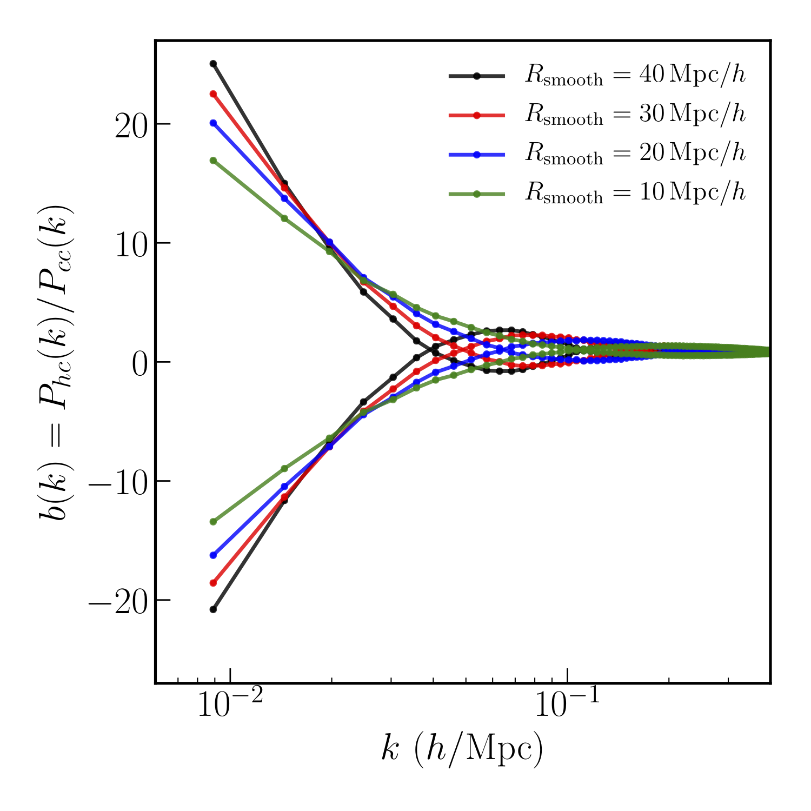
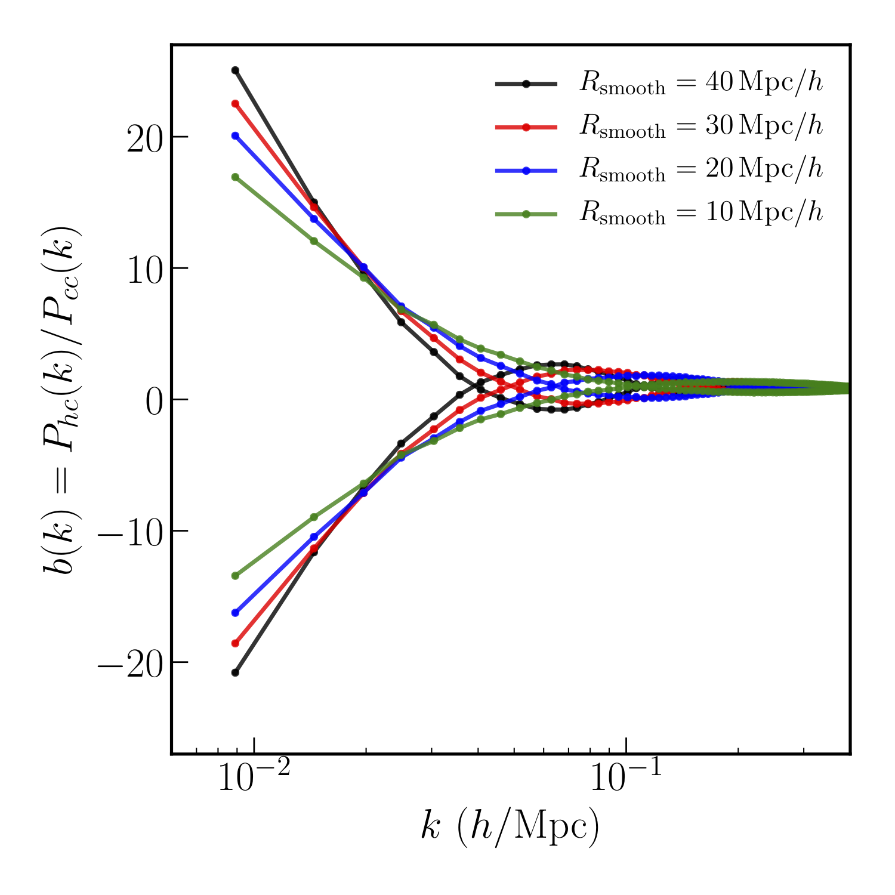

A large part of my research focuses on understanding the process of structure formation in the Universe, and using it to inform our models of fundmental physics. Here are some of the specific questions and techniques I have worked on:
Neutrino mass measurements from cosmology
Neutrinos are the lightest Standard Model particles, but the number density of relic neutrinos from the early Universe are high enough that they affect the formation and growth of structure in the Universe. The size of the effect on various cosmological observables is directly proportional to the total mass of the three neutrino mass eigenstates. Turning this around, precise measurements from cosmology can help constrain the neutrino mass. This is going to be one of the main targets for upcoming cosmological surveys.
In this paper, we investigated how well the neutrino masses can be constrained by combining measurements on large scales (where linear perturbation theory is valid) from two of these experiments, the LSST at VRO, and the CMB-S4 experiment.
To fully capture the effect of neutrino mass, down to scales where the structure formation process is nonlinear, neutrinos need to be actively modeled in high resolution N-body simulations. I helped develop two new numerical techniques (here and here), which can track the full nonlinear evolution in massive neutrino cosmologies without suffering from discreteness issues plaguing some of the other methods. These advances in simulation methods are crucial for harnessing the information on neutrino mass from nonlinear scales in various surveys.
Neutrinos also produce unique signatures on the clustering of nonlinear objects, like Dark Matter halos, and highly empty regions, called voids. The effect, termed "scale dependent bias" is absent in standard ΛCDM cosmologies. Our paper was the first to point out that the effect is enhanced in voids. In another paper, my collaborators and I explored how this effect can be further enhanced by using information about the halo environment.
 

Dark Matter Self-interactions
While cosmology and other extragalactic phenomena provide the strongest evidence for an invisible clustering component of the Universe called Dark Matter, very little is currently know about the microphysical nature of Dark Matter. As more precise cosmological data from various experiments comes in over the next decade, it is worthwhile to ask if this data can be used to say something about the properties of Dark Matter. One topic that has garnered a lot of interest is whether Dark Matter has strong self-interactions, and the signatures of these self-interactions on various cosmological observables.
To explore the effects of self-interactions in detail, I helped develop code (described here) that could be used to study the most general elastic cross sections. Using simulations run with this code, we found in this paper that weak lensing measurements around massive clusters can provide very tight constraints on the interaction strength at cluster scale.
In another paper, we studied self-interactions on the Milky Way scales, and found that self-interactions leave distinct imprints on the satellite populations of a Milky Way like system, both in radial distributions, and velocity distributions. Self interactions can also produce other exotic phenomena, such as the warping of disc galaxies as they fall into clusters. As part of the LSST Dark Matter group, I helped put together this document which explores how the LSST survey at VRO can help constrain various dark matter models.